CSCI1250 Computer Animation
Fall 2025 • 4 weeks
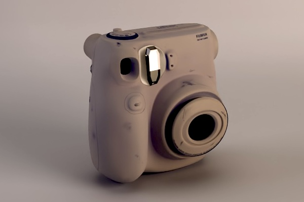
For this project, I was tasked to model and shade an item that I owned. I decided to model my own Fujifilm Polaroid camera. It had some interesting geometry: overall it was really smooth, but also had a lot of buttons and other protrusions. For the shading part, it had a decent amount of wear and tear.
Since I owned the item, it was easy for me to set up my camera and take reference photos. To get a more orthographic look, I positioned myself further away from the object and zoomed in.
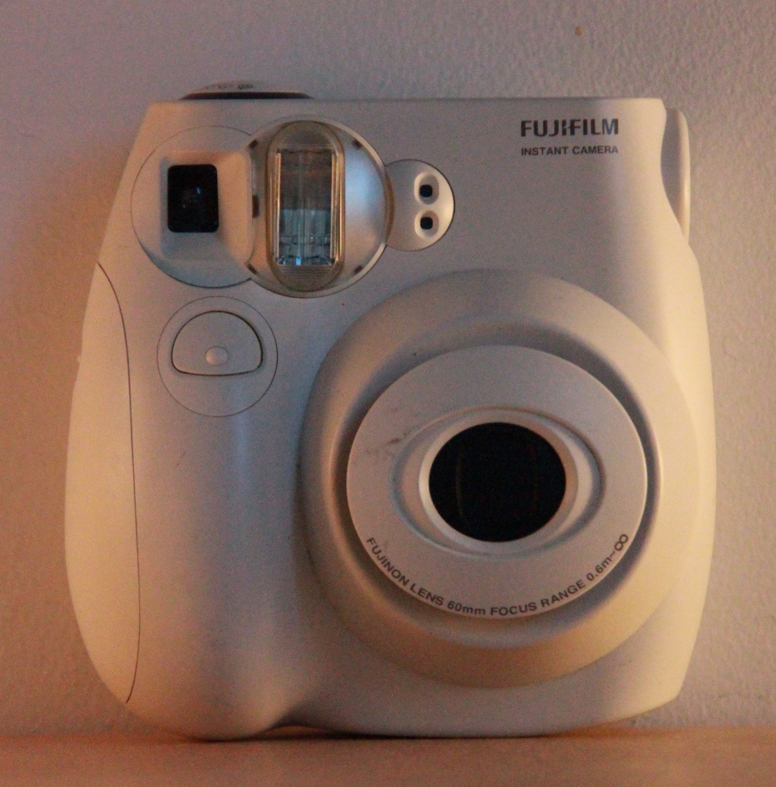
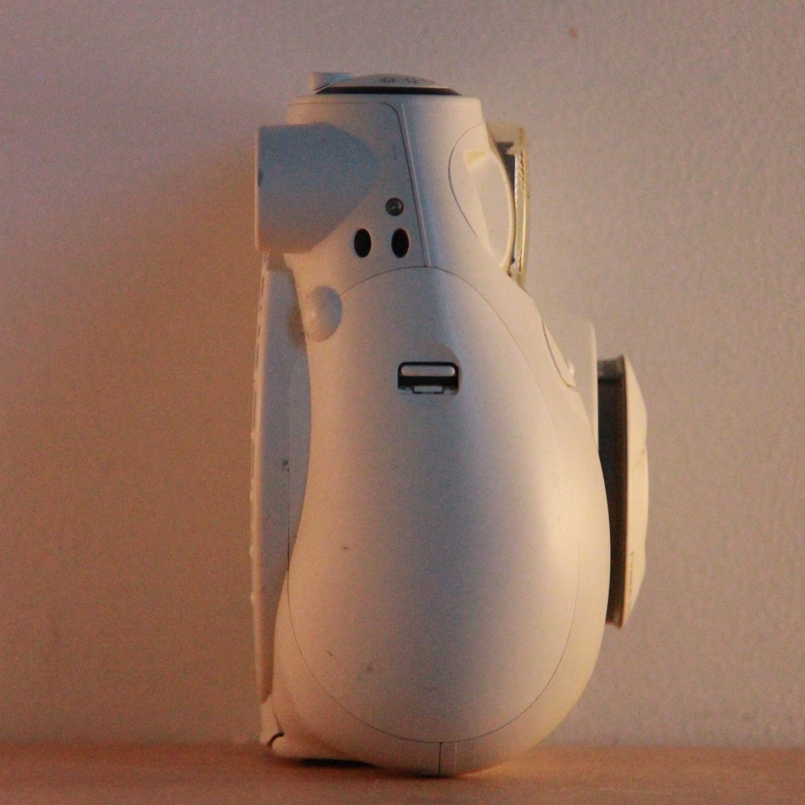
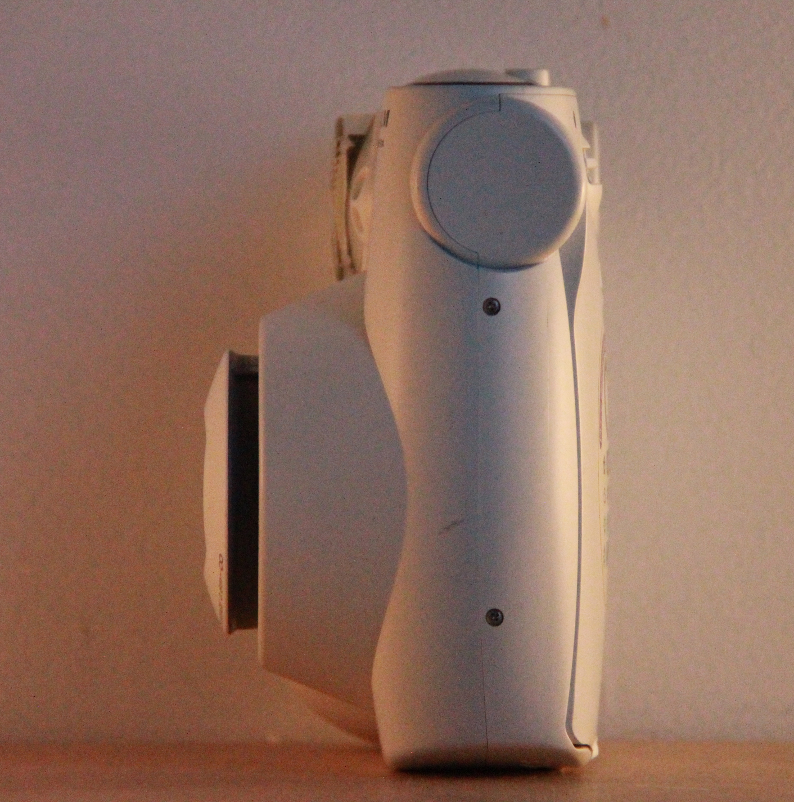
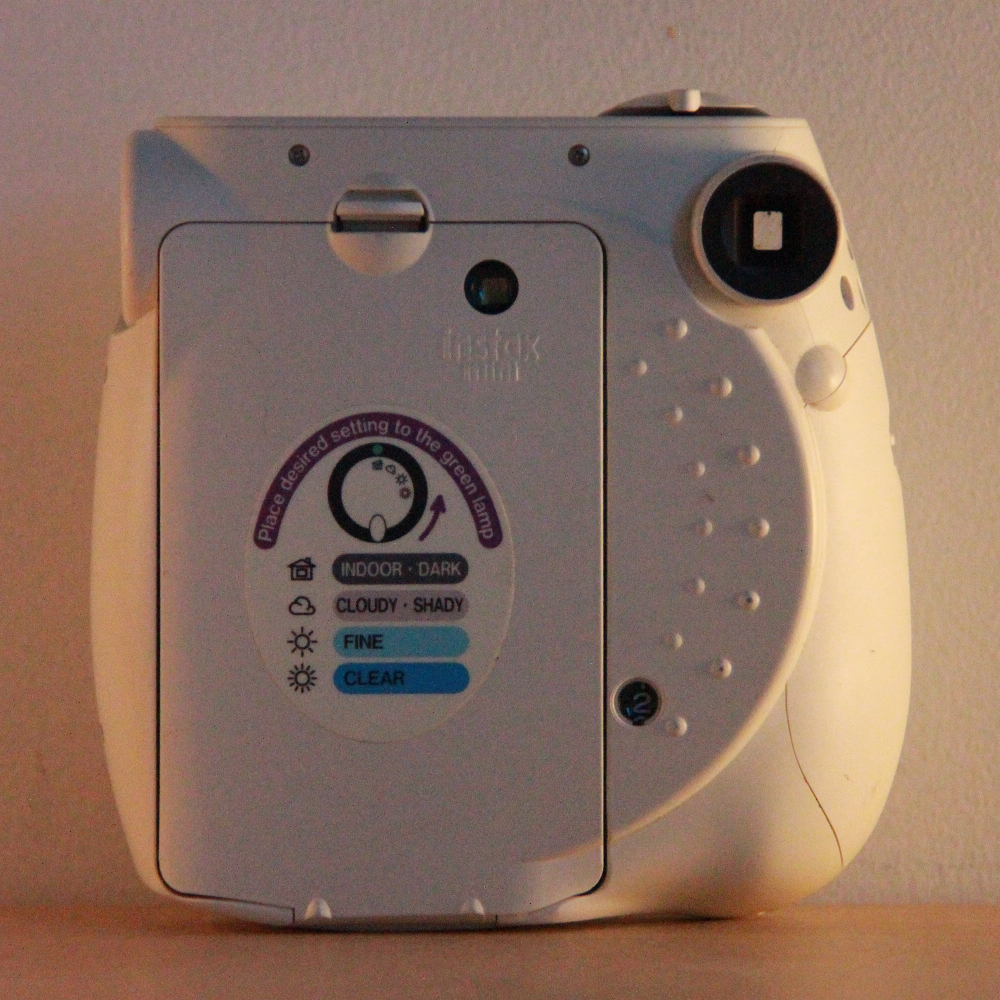
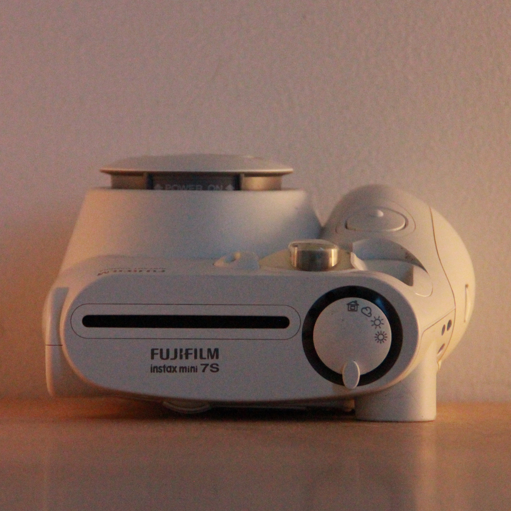
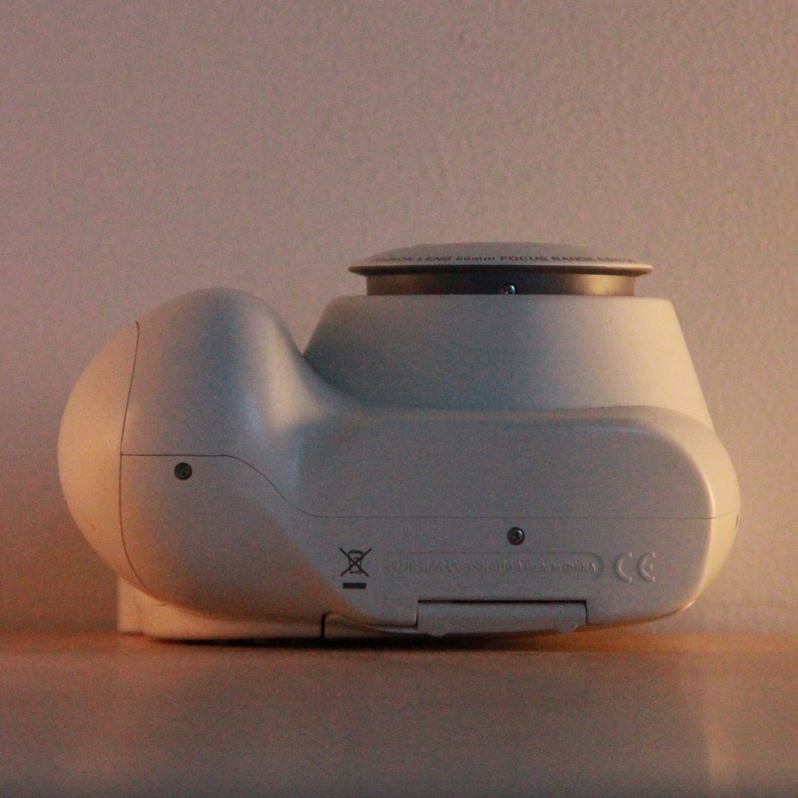
After taking reference photos, I built my model. I started with a basic cube primitive. Then I continuously added edge loops and extruded faces until my model resembled the reference. Once I was happy with the model, I edited the UV maps, to be most useful when it came to shading.
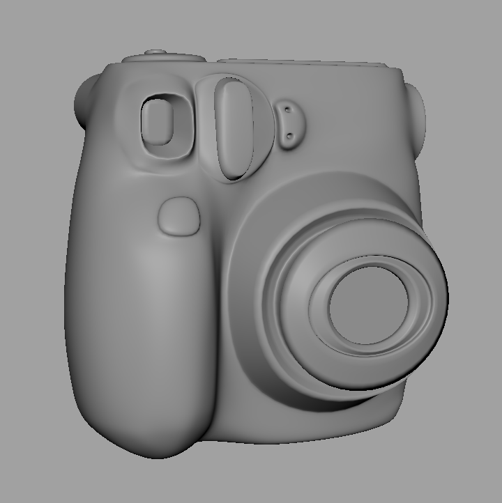
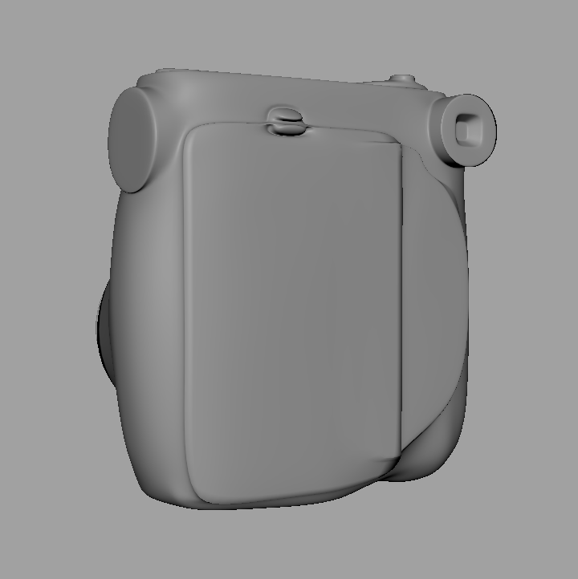
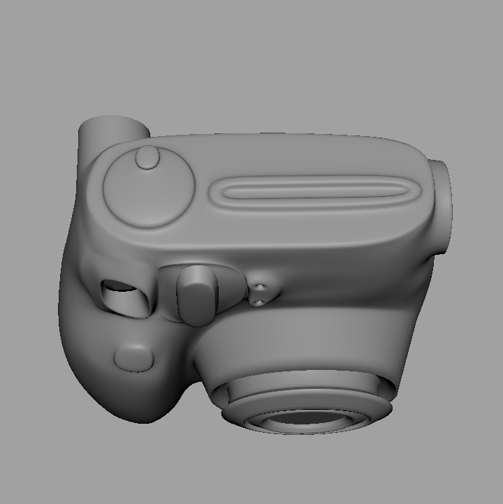
Next, I created a UV map to map the stickers and wear and tear onto the camera.
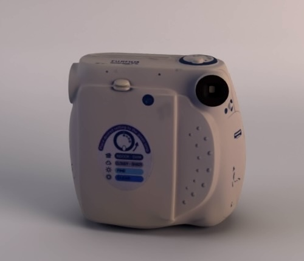
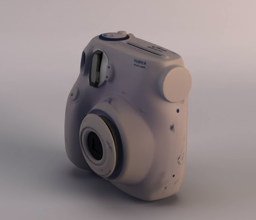
The result is a fully shaded model of a fujifilm camera spinning on this 360º turntable
This was the first time I really spent weeks modeling and shading a single piece. I learned a lot through the experience, from taking reference photos to new ways of modeling and layering shading. This was a very fruitful project, and I can't wait to do more.
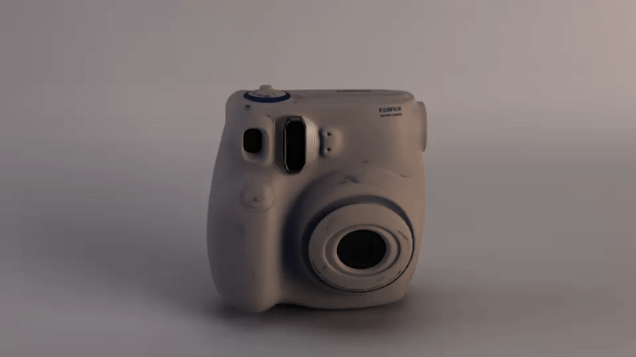